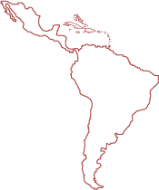
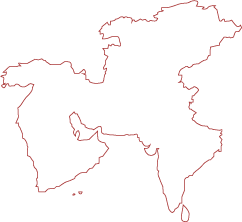
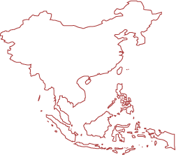

Africa
332 million people
Here are the numbers throughout different parts of the world.
332 million people

32 million people

155 million people

131 million people
Water is connected to education, to poverty, to disease. If you don't have clean water, you need to find it... which takes time, which means you have less time to work, to spend at home, and to pursue an education.
If you don't have access to clean water, your likelihood of sickness or disease increases signficantly. This means less time to work, to spend at home, and to pursue an education.
Water is central to everything and the lack of it leads to problems in every other area of life. This isn't right. Learn how water changes everything.
Video From CharityWater.org